🦴 骨骼系統(頭部)
顱骨
- 共六種8塊
- 顳骨(temporal)：成對
組成：(除顳骨、頂骨成對以外，其餘單一)
- 額骨(frontal)
- 蝶骨(sphenoid)
- 篩骨(ethmoid)
- 頂骨(parietal)：成對
- 枕骨(occipital)
各顱骨交會點
- ★★翼點(pterion)：頂骨、額骨、蝶骨、(顳骨)、
(顴骨)交會點—>
※翼點有中腦膜A.(←上頷A←外頸A)通過—>易導致硬腦膜上腔出血(EDH)備註
- 趙神說因為各參考書定義之位置不同，所以有可能含顳骨，也可能不含。
- 95年國考題目說有含顴骨，但我翻了各種資料，都沒發現有包含顴骨
- 星點(asterion)：頂骨、顳骨、枕骨
- ★鼻(根)點(nasion)：額骨、鼻骨
- 枕點(inion)：枕骨外隆突(external occipital protuberance)
- 前囟點(bregma)：頂骨、額骨交會
- 人字點(lambda)：頂骨、枕骨之交會點
- 眉間(glabella)：印堂，額骨兩眉間之凹陷
縫(suture)：不動關節、纖維性關節
- 矢狀縫：頂骨-頂骨
- 冠狀縫：額骨-頂骨
- 人字縫：頂骨-枕骨
- 鱗狀縫：頂骨-顳骨
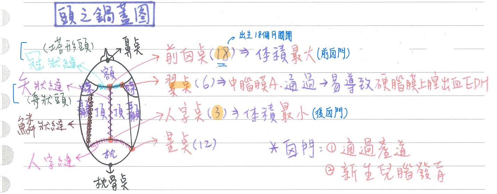
顱縫過早閉合(craniosynostosis)之疾病：suture的垂直方向不能長了，只好往橫向長
- 舟狀頭(scaphalocephaly)：矢狀縫過早閉合(最常見，約50%)
- 塔型頭(turricephaly)=尖型頭(oxycephaly)：雙側冠狀縫過早閉合(約30%)
- 斜頭(plagiocephaly)：單側冠狀縫過早閉合
- 三角頭(trigonocephaly)：胚胎時期，左右額骨間之額縫過早閉合
囟門(fontanel)：未鈣化之膜狀骨；囟門利於胎兒通過產道、嬰兒腦部發育
- 前囟門(額囟門)：矢狀縫-冠狀縫之間；菱形；出生後18個月關閉(體積最大，最晚鈣化閉合)
- 後囟門(枕囟門=人字點)：矢狀縫-人狀縫之間；三角形；出生後3個月關閉(體積最小，最早鈣化閉合)
- 前外側囟門(蝶囟門)x2：冠狀縫-鱗字縫之間(=翼點)；出生後6個月關閉
- 後外側囟門(乳突囟門)x2：人狀縫-鱗字縫之間(=星點)；出生後12個月關閉
顱窩(cranial fossa)：
- ★前顱窩：含額葉；由額骨、篩骨、蝶骨構成
- ★中顱窩：含顳葉；由顳骨、蝶骨構成
- 後顱窩：含小腦半球；由顳骨、枕骨構成
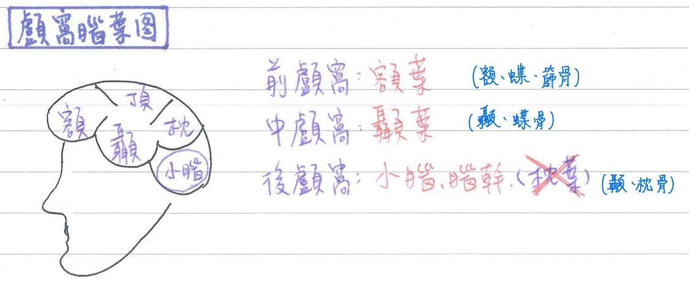
顳骨(temporal bone)：分4部
鱗狀部(squamous)
- 顳骨最高、最大、最薄的地方(也是整個顱骨最薄之處)
岩狀部(petrous)：含內耳(前庭、半規管、耳蝸)
- 破裂孔(Foramen lacerum, Lacerated foramen)：位於蝶骨&顳骨之間；大岩神經通過
- ★[110-2]顳骨岩部：具小岩N溝、大岩N溝
- 頸動脈孔(carotid foramen)：頸動脈通過
- 內聽道孔(internal acoustic meatus foramen)：CN7,8通過
- 頸靜脈孔(jugular foramen)：顳骨&枕骨之間；CN9,10,11、內頸靜脈通過
乳突部(mastoid)：
- 含氣室(減輕頭骨重量)
- 具莖狀突(styloid process)
- ★連接三塊肌肉：
- 莖突舌肌(styloglossus m.)：舌外在肌，CN12支配
- 莖突舌骨肌(stylohyoid m.)：舌骨上肌群，CN7支配
- 莖突咽肌(Stylopharyngeus m.)：咽部肌肉，CN9支配
- ★連接三塊肌肉：
- ★莖乳突孔(stylomastoid foramen)：CN7 通過
(CN7先穿過位於★岩狀部的facial canal，再於莖乳突孔穿出)
鼓室部(tympanic)
- 含外耳道、中耳(鼓室)、耳咽管
顳骨弓(zygomatic arch)
- 顳骨顴突(zygomatic process)和顴骨顳突所形成
顳頷關節(TMJ)
- 顳骨下頷窩(mandibular fossa)和下頷骨髁狀突(condylar process)形成
- 頭部唯一可動的關節
蝶骨(sphenoid)：分為蝶體、大&小翼、翼突
蝶骨-特色：
- 顱骨之關鍵骨(和其他顱骨皆相關節，且位於中央)
- 參與形成：顱腔、眼眶、鼻腔
蝶體(body)：
- 內含蝶竇(sphenoid sinus)：為左右緊鄰之副鼻竇
- 上為蝶鞍(sella turica)=腦下垂體窩(hypophysial fossa)—>腦下垂體所在
小翼(lesser wing)：
- 視神經孔(optic canal)：蝶體-小翼之間；視N(CN2)、眼A通過
- 眶上裂(superior orbital fissure)：大翼-小翼之間；CN3, 4, 5-1, 6, 上眼V通過
※對照：眶下裂—>下眼V通過
大翼(greater wing)：(以下孔由內而外、由前到後排列)
- 圓孔(foramen rotundum)：CN 5-2通過
- 內翼板(medial plate)：較窄長
- 卵圓孔(f. ovale)：CN5-3，小岩N(CN9分支；支配耳下腺)通過
- 棘孔(f. spinosum)：中腦膜動/靜脈、下頷N(CN5-3)腦膜支通過
- 破裂孔(f. lacerum)：蝶骨-顳骨間；大岩N(CN7分支；支配鼻腺、淚腺)通過
- 眶下裂(inferior orbital fissure)：蝶骨-上頷骨之間；顴骨N(CN V2分支)及血管、眶下N(V2分支)及血管、下眼靜脈通過
翼突(pterygoid process)：由蝶體、大翼交接處向下突出
- 外翼板(lateral plate)：較寬短
- 翼狀窩(pterygoid fossa)：分隔內、外翼板
頂骨
額骨
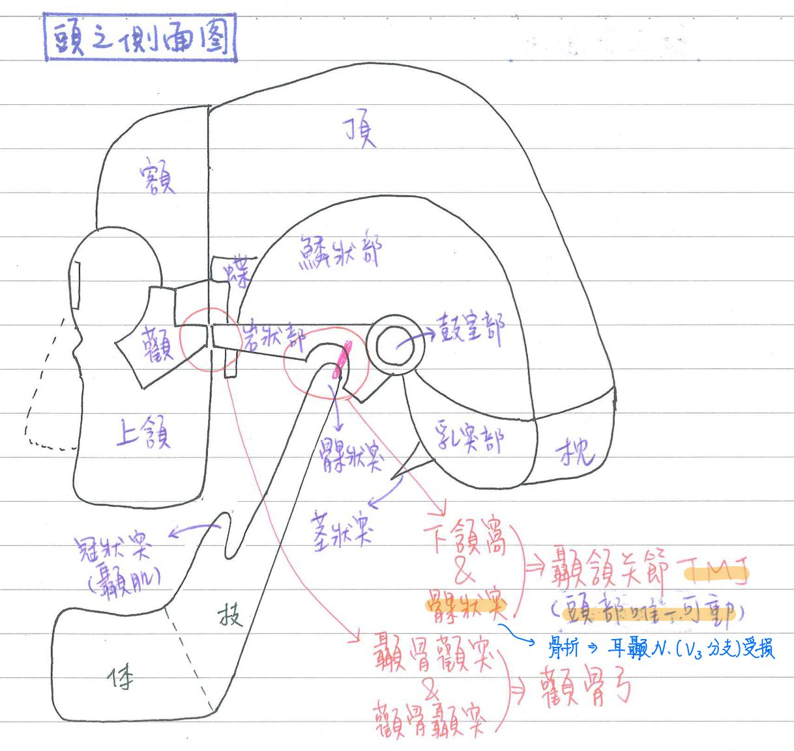
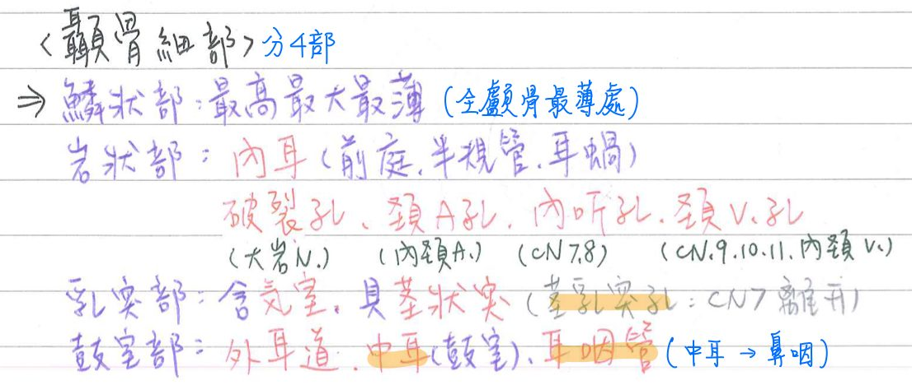
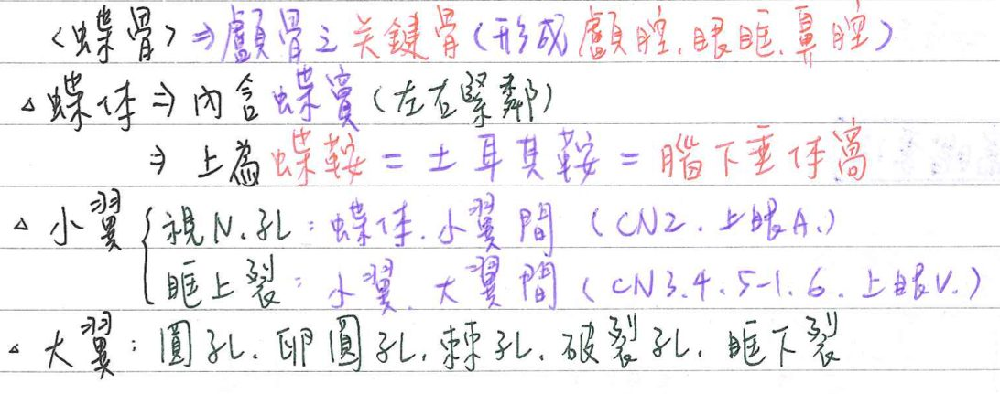
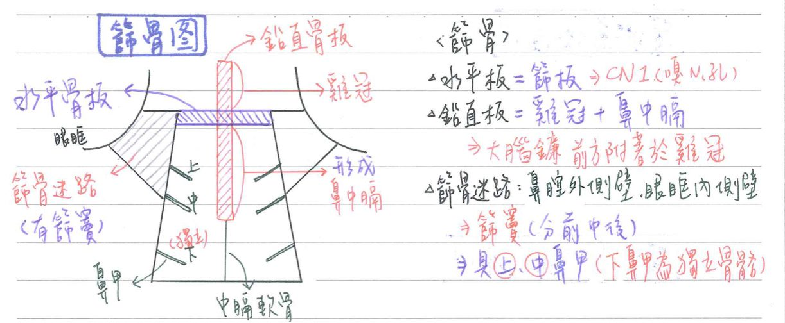
篩骨(ethmoid bone)
- 水平板=篩版(cribriform plate)：具嗅神經孔(=篩狀孔)—>CN1通過
- 鉛直板(perpendicular plate)：形成鼻中膈(nasal septum)+雞冠(crista galli)
※補充：大腦鐮(falx cerebri, 隔開左右大腦)前方附著於雞冠
- 篩骨迷路(labyrinth)：位於眼眶跟鼻腔之間；內含前、中、後篩竇(ethmoid sinus)
- 形成鼻腔的外側壁；眼眶內側壁
- 具上鼻甲、中鼻甲
※對照：下鼻甲(inferior nasal concha)為一塊獨立的骨骼(上中鼻甲為篩骨的一部分)
- 篩骨&額骨間具有：前篩孔(前篩N通過)、後篩孔(後篩N通過)、盲孔
枕骨(occipital bone)
- 枕骨大孔(foramen magnum)：顱骨最大孔；內含延髓/脊隨、副神經(CN11)的脊髓支、椎A、脊髓A
- 枕骨髁(condyle)：和C1(寰椎)形成寰枕關節(形狀像是跪在C1上)—>俯仰動作(點頭)
※對照：搖頭—>C1/C2關節
- 舌下神經孔(hypoglossal canal)：舌下N(CN12)通過
- 枕點(枕骨外隆突)：為水平的上頸線和垂直的正中頸線之交會點
顏面骨
- 共8種14塊
顏面骨-組成：(除犁骨、下頷骨是單一以外，其餘顏面骨皆為成對)
- 上頷骨(maxillary)
- 下頷骨(mandibular)
- 腭骨(palatine)
- 顴骨(zygomatic)
- 鼻骨(nasal)
- 淚骨(lacrimal)：內含鼻淚管(nasolacrimal duct)
- 下鼻甲(inferior nasal concha)
- 犁骨(vomer)：鼻中膈最主要、最大的骨頭(補充from耳鼻喉區段)
顏面骨-特性
- 顏面骨當中最小：淚骨
- 形成鼻樑：鼻骨
- 最大、最強者：下頷骨
- 唯一可動的：下頷骨
- 具副鼻竇(paranasal sinus)的：額骨、上頷骨、篩骨、蝶骨
- 硬顎：上頷骨、腭骨
- 齒槽：上頷骨、下頷骨
- 骨性鼻中膈：篩骨、犁骨
上頷骨(maxillary bone)
上頷骨-體部
- 上頷竇(maxillary sinus)：最大的副鼻竇
- 眶下孔(infra-orbital foramen)：含眶下神經(infra-orbital n., V2分支)
- 前鼻棘(anterior nasal spine)：鼻中膈附著
上頷骨-突起(process)
- 齒槽突(alveolar process)：具上排齒槽 <對照>下頷骨—>下排齒槽
- 腭突(palatine process)：形成硬顎前3/4，含
(1) 門齒孔(incisive foramen)：含★鼻腭神經(nasopalatine n. , V2分支)
(2) 門齒縫(incisive suture)：連結初級腭(額鼻突)及次級腭(上額突)
- 額突(frontal process)
- 顴突(zygomatic process)
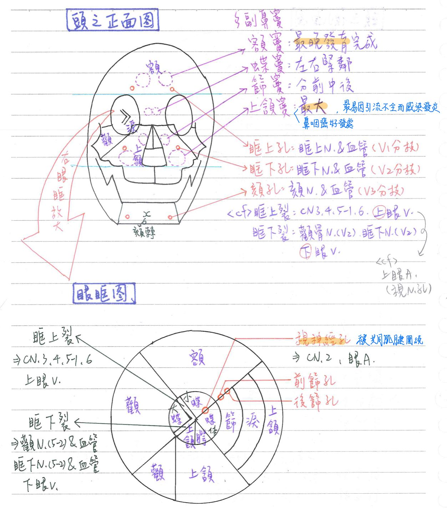
下頷骨(mandibular bone)
體部(body)
- 外側：(1) 頦孔(mental foramen)：含頦神經(mental n., V3分枝)
(2) 下頷隆突(mental protuberance)
- 內側：(1) 頦棘(mental spine)：頦舌肌&頦舌骨肌附著處
(2) 下頷舌骨線(mylohyoid line)：下頷舌骨肌(mylohyoid)附著處
角(angle)：約140度
- 下頷骨骨折最易斷裂處(35%)
枝部(ramus)
- 髁狀突(condylar process)：位於後方，較大
- 顳頷關節(TMJ)：由下頷骨髁狀突和顳骨下頷窩(mandibular fossa)構成
- 髁狀突頸部骨折：易造成耳顳N(auriculotemporal n. , V3分枝)受損
- 內側具下頷孔(mandibular foramen)：★下齒槽N(V3分枝)及血管通過
- ★麻醉下排牙齒：由★下頦孔注射麻醉劑(下第三臼齒後上方)—>麻醉下齒槽N
- 顳頷關節(TMJ)：由下頷骨髁狀突和顳骨下頷窩(mandibular fossa)構成
- 冠狀突(coronoid process)：位於前方，較小；為顳肌附著處
- 下頷骨小舌(lingula of mandible)：位於內側下頷孔旁的小突起
- 為蝶下頷韌帶(sphenomandibular l.)附著處
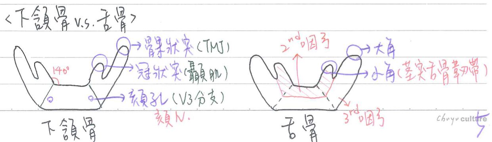
腭骨(palatine)：呈L型
水平板：形成硬顎的後1/4 <對照>硬顎的前3/4：上頷骨的腭突
- 大腭孔(greater palatine foramen)：含大腭N(greater palatine n. , V2分支)
- 小腭孔(lesser palatine foramen)：含小腭N(lesser palatine n. , V2分支)
- 後鼻棘(posterior nasal spine)： <對照>上頷骨的前鼻棘
- 硬腭&上排牙齦麻醉：由大腭孔(上第3臼齒後上方)注射麻醉劑—>麻醉大腭N
<對照>下齒槽神經麻醉—>下頷孔/下顎骨孔—>麻醉下齒槽N
鉛直板：構成鼻腔之外側壁、眼眶之下底
舌骨(hyoid bone)
- 全身唯一孤立的骨頭，不直接與其他軟骨、硬骨相關節
- ★位於C3，呈U型，由第2&3咽弓發育
- 由體部(body)+大角(greater horn)+小角(lesser horn)構成，形狀和下頷骨幾乎相同(但是略小)
- 莖突舌骨韌帶(stylohyoid l.)：連接舌骨小角&和顳骨
- 甲狀舌骨膜(thyrohyoid membrane)：連接舌骨體部&甲狀軟骨
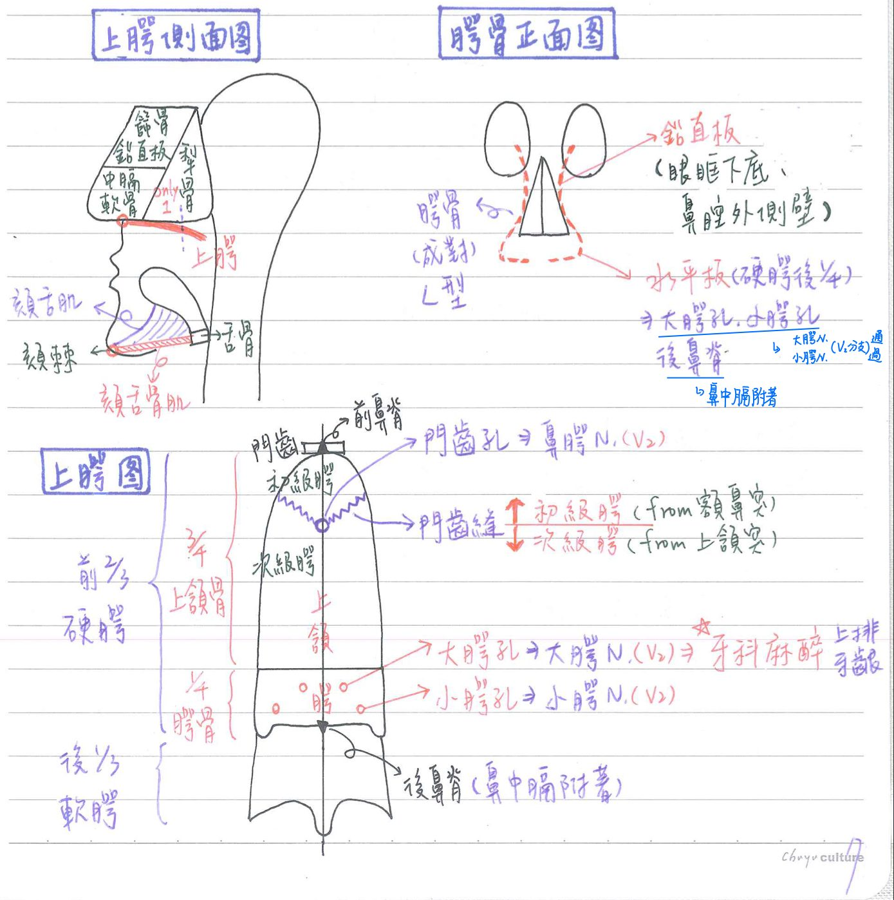
眼眶(背圖)
★組成：
- 上頂(roof)：額骨、蝶骨
- 外側(lateral wall)：顴骨、蝶骨
- 下底(floor)：上頷骨、顴骨、腭骨
- 內側(medial wall)：淚骨、上頷骨、篩骨、蝶骨
- 眼窩底骨折(orbital floor fracture)=吹破骨折,(blow-out fracture)
- 眼球下陷：眼窩四周脂肪陷入上頷竇
- 複視：下直肌陷入★上頷竇
- 眶下麻木：眶下N受損
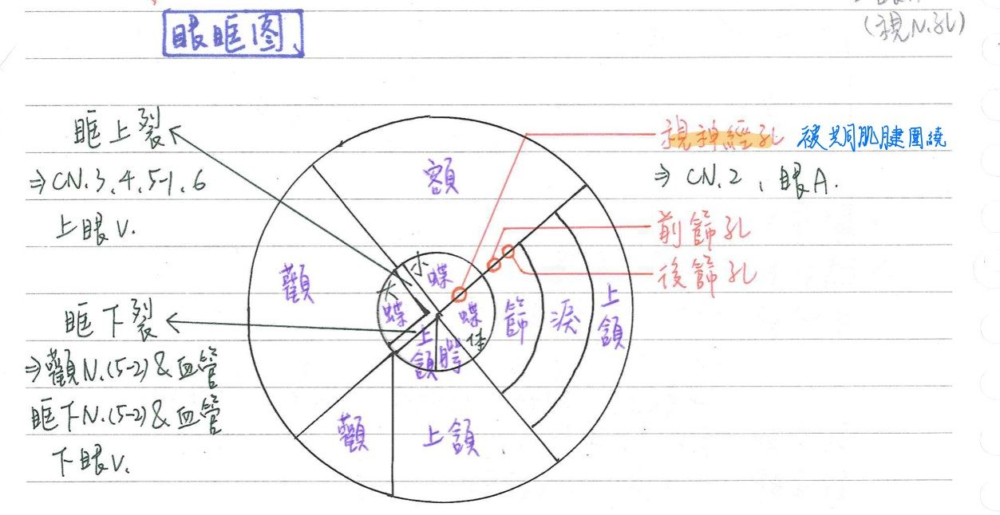
頭骨內、外側孔(foramen)/裂(fissure)(必背)
頭骨內側孔(foramen)/裂(fissure)
| 名稱 | 顱窩 | 位置 | 內容物 |
|---|---|---|---|
| ★[110-2]盲孔(cecum) | 前顱窩 | 額骨/篩骨(雞冠) | 上矢竇起點 |
| 篩狀孔(cribriform) =嗅神經孔 | 前顱窩 | 篩骨(水平板) | 嗅N. |
| ★★視神經孔(optic) | 前顱窩 | 蝶骨(小翼) | 視N. 眼A. |
| 前篩孔(anterior ethmoid) | 前顱窩 | 篩骨/額骨 | 前篩N. (V1分支)和血管 |
| ★後篩孔(posterior ethmoid) | 前顱窩 | 篩骨/額骨 | 後篩N. (V1分支)和血管 |
| ★眶上裂(superior orbital) | 中顱窩 | 蝶骨(大小翼之間) | CN3,4, V1(眼支), 6 上眼V. |
| ★圓孔(rotundum) | 中顱窩 | 蝶骨(大翼) | CN V2(上頷支) |
| ★卵圓孔(ovale) | 中顱窩 | 蝶骨(大翼) | CN V3(下頷支)、小岩N.(CN9分支) |
| 棘孔(spinosum) | 中顱窩 | 蝶骨(大翼) | 中腦膜血管 CN V3(下頷N.)腦膜支 |
| 破裂孔(lacerum) | 中顱窩 | 顳骨(岩部)/蝶骨 | 大岩N.(CN7分支) |
| 頸動脈孔(carotid) | 中顱窩 | 顳骨(岩部) | 內頸A. |
| 內聽孔(internal auditory) | 後顱窩 | 顳骨(岩部) | CN 7,8；內聽V. |
| ★★★頸靜脈孔(jugular v.) | 後顱窩 | 顳骨(岩部)/枕骨 | 內頸V. CN9, 10,11 |
| 舌下神經孔(hypoglossal) | 後顱窩 | 枕骨 | CN 12；升咽A.腦膜支 |
| 枕骨大孔(magnum) | 後顱窩 | 枕骨 | 延腦，CN11(脊隨支) 椎A. , 前、後脊髓A. |
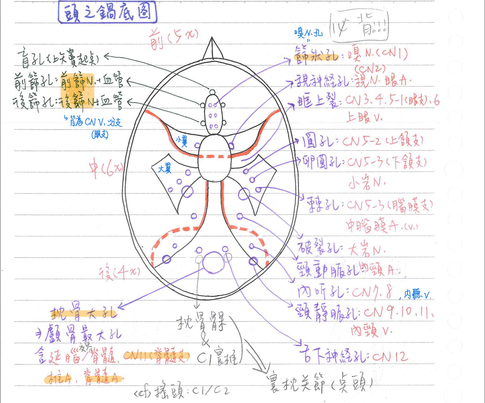
頭骨外側孔(foramen)/裂(fissure)
| 方位 | 名稱 | 位置 | 內容物 |
|---|---|---|---|
| 前方 | 眶上孔(supra-orbital) | 額骨 | 眶上N. (V1分支)&血管 |
| 眶下孔(infra-orbital) | 上頷骨 | 眶下N. (V2分支)&血管 | |
| 頦孔(mental) | 下頷骨(體部外側) | 頦N. (V3分支)&血管 | |
| ★眶上裂(superior orbital) | 蝶骨(大小翼之間) | CN3,4,V1,6 &上眼V. | |
| 眶下裂(inferior orbital) | 蝶骨(大翼)/上頷骨(眼眶部) | 顴N. &眶下N.(皆V2分支)及血管 下眼V. | |
| 外側 | 顴面孔(zygomaticofacial) | 顴骨 | 顴面N. (V2分支) |
| 乳突孔(mastoid) | 顳骨(乳突後緣) | 導出靜脈(emissary v.) | |
| 上方 | 頂孔(parietal) | 頂骨 | 導出靜脈(emissary v.) |
| 下方 | 門齒孔(incisive) | 左右上頷骨之間 | 鼻顎N.(V2分支)、降顎血管 |
| 大顎孔(greater palatine) | 顎骨(前) | 大顎N.(V2分支)、降顎血管 | |
| 小顎孔(lesser palatine) | 顎骨(後) | 小顎N.(V2分支)&血管 | |
| 破裂孔(lacerum) | 顳骨(岩部)/蝶骨 | 大岩N.(CN7分支) | |
| ★翼管(pterygoid canal) | 蝶骨 (不是在顳骨！) | 翼管N.(pterygoid)(CN7副交感節前) →支配鼻&淚腺 &血管 | |
| 卵圓孔(ovale) | 蝶骨(大翼) | CN V3、小岩N.(CN9分支) | |
| 棘孔(spinosum) | 蝶骨(大翼) | 中腦膜血管 CN V3腦膜支 | |
| 頸動脈孔(carotid) | 顳骨(岩部) | 內頸A. | |
| 頸靜脈孔(jugular) | 顳骨(岩部)/枕骨 | CN 9,10,11 內頸V. | |
| ★★莖乳突孔(stylomastoid) | 顳骨(莖突/乳突) | CN7、莖乳突A. | |
| 舌下神經孔(hypoglossal) | 枕骨 | CN12、升咽A.腦膜支 | |
| 枕骨大孔(magnum) | 枕骨 | 延腦，CN11(脊隨支) 椎A. , 前、後脊髓A. |
/的意思：...之間
- @蝶骨大翼：圓孔、卵圓孔、棘孔
- 內側全背；外側重點：眶上/下孔、頦孔、眶上/下裂
- 門齒孔、大顎孔、小顎孔皆有CN V2的分支通過
★★★★翼腭窩(pterygopalatine fossa) [國考問的range都很大，基本上全部都要背；108有考過走向]
- 位於顱骨外側面，顴骨弓內側
翼腭窩-構成：3塊
- 前壁：上頷骨
- 後壁：蝶骨
- 內壁：腭骨
- 外壁：顴骨
翼腭窩-內含：3個
- 翼腭神經節(pterygopalatine ganglion)：包含CN7副交感節前、交感節後(from上頸神經節)
→支配淚腺、鼻腺
- ★上頷N. (CN V2)：翼腭窩為麻醉V2的主要解剖標記
- ★上頷V. (第3部分)
翼腭窩-交通孔道(7孔6腔)
- ★★圓孔(foramen rotundum)：
—>中顱窩；上頷N.主幹
- ★★★翼管(pterygoid canal, Vidian canal)：位於蝶骨
—>★中顱窩；翼管N. (n. of pterygoid canal = Vidian n.) &血管
※翼管N. =大岩N. (CN7的副交感節前)+深岩N.(from 上頸神經節的交感節後)
- ★眶下裂(inferior orbital fissure)：
—>眼眶(底)；含顴N.(V2分枝)、眶下N.(V2分支)及血管、下眼V.
- ★★★蝶腭孔(sphenopalatine foramen)：
—>鼻腔(側壁)；後鼻N.、鼻腭N.(nasopalatine)&蝶腭血管
- 腭鞘管(palatovaginal canal)=咽管(pharyngeal canal)：
—>咽(鼻咽)；咽N. (pharyngeal n. , V2分枝)&血管
- ★翼上頷裂(pterygomaxillary fissure)：
—>顳下窩；後上齒槽N.(posterior superior alveolar n.)&血管- <cf> ★前上齒槽N沒有經過翼腭窩
- ★大、小腭管(greater & lesser palatine canal)
—>口腔(頂)的硬顎黏膜；大腭N.、小腭N.、降腭血管
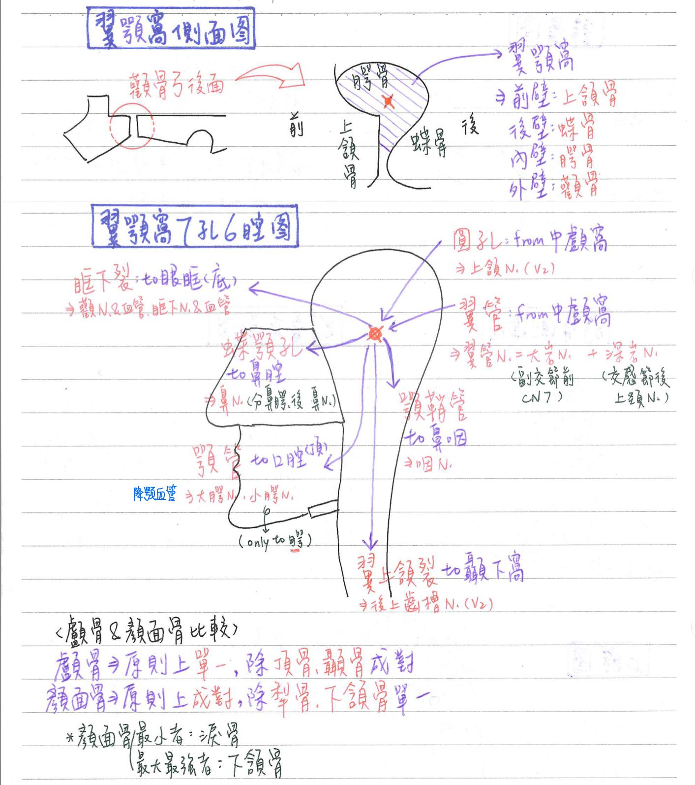
顳窩：顱骨外側面
- 構成：顴骨、額骨、蝶骨、頂骨、顳骨
- 內容物：顳肌
顳下窩(infratemporal fossa)：顳窩的下方
顳下窩-構成
- 外側：下頷骨
- 內側：咽管
- 前方：上頷骨
顳下窩-內容物
- 韌帶：蝶下頷韌帶
- 肌肉：內翼肌、外翼肌
- 血管：上頷A.、翼狀靜脈叢(pterygoid venous plexus)
- 神經：CN5-3, 7, 9
📖 書本補充：與筆記不同或筆記沒寫到的地方
⚠️
以下為對照書本後整理，筆記原文未更動。標「筆記 vs 書」的是兩邊寫法不同、建議回頭確認的地方。顳頷關節（p.529–530）的補充與考題放在「骨骼系統(重要關節)」頁。
頭骨的組成與表面標記（p.406）
- 名稱：顱骨（8 塊）又稱神經顱（neurocranium），因為裡面裝腦；顏面骨（14 塊）又稱臟顱（viscerocranium），因為圍成眼眶、口腔等容納器官的空腔。顱頂（calvaria）與顱底之間為腦盒。
- 胚胎來源（筆記沒寫）：
- 顱頂：來自神經嵴的間葉組織，膜內骨化。
- 顱底：軟骨內骨化。
- 顏面骨：來自咽弓（pharyngeal arch）的間葉組織。
- 書的提示：顱骨中的扁平骨（如頂骨、顳骨的扁平部）是膜內骨化，其餘來自胚胎的軟骨進行軟骨內骨化 → 對應考題 102-2-32（顳骨岩部是軟骨內骨化）。
- 筆記 vs 書：翼點（pterion）的組成。筆記備註說各書不同、可能含顳骨；書上明確寫蝶骨大翼、顳骨扁平部、額骨及頂骨四骨交會，沒有顴骨。
- 前囟點（bregma）＝冠狀縫與矢狀縫交界；人字點（lambda）＝人字縫與矢狀縫交界；印堂（glabella）＝鼻根上方的額骨。
顱底的孔洞與管道（p.407–408）
- 筆記 vs 書：視神經管所屬顱窩。筆記表格寫前顱窩；書上寫蝶骨小翼／中顱窩。
- 筆記 vs 書：盲孔（foramen cecum）。筆記寫位在額骨／篩骨、內容物「上矢竇起點」；書上寫位在篩骨／前顱窩，胚胎時有血管通過、出生後不明顯；110-2-5 解析也說成人時並無構造通過，只有極少數有血管。
- 筆記 vs 書：破裂孔（foramen lacerum）。筆記寫「蝶骨＆顳骨之間；大岩N通過」；書上寫位於蝶骨大翼、枕骨斜坡（clivus）及顳骨岩樣部之間，活體時被軟骨封閉，內頸動脈通過其上方；書上沒有列大岩N通過破裂孔（110-2-4 解析：大岩神經溝在岩樣骨前方、破裂孔的後外側）。
- 眶上裂：書上寫眼靜脈（進入海綿竇）＋CN III、IV、V1、VI。
- 頸靜脈孔：除 CN IX、X、XI 外，書上寫「乙狀竇注入內頸靜脈」於此。
- 舌下神經管：位在枕骨大孔的兩側。
- 書的提示：
- 額葉、顳葉、枕葉及小腦分別在前、中、後顱窩。
- 須熟記各孔洞位在哪一個顱窩。
- 雞冠為大腦鐮附著處（筆記已有）。
前方及下方的孔洞與管道（p.409）
- 眶上孔（或切跡）：額骨眶上緣；眶上動靜脈（眼動脈的分支）＋眶上神經（V1）。
- 門齒窩和管：上頷骨腭突之間；鼻腭神經（V2）＋腭大動脈及神經的終端支（筆記寫「降顎血管」）。
- 筆記 vs 書：硬腭的分配。筆記寫腭骨水平板形成硬顎「後 1/4」、上頷骨腭突「前 3/4」；書在 p.409 表上寫腭大小孔所在的腭骨水平板為硬腭後 1/3，但 p.514 考題解析又寫上頷骨腭突形成硬腭的前四分之三。Claude 註：書本自己前後寫法不一致；兩種比例在不同教材都看得到，考試出現時以選項判斷。
- 腭大和小孔：腭大、小神經（V2）＋腭大、小動脈（來自蝶腭動脈）。
- 下頷窩：位在顳骨的扁平部，接受下頷髁。
- 莖乳孔：莖突與乳突之間，顏面神經通過。
蝶骨體（p.410）
- 蝶鞍（sella turcica）由前、後床突圍成。
- 鞍結（tuberculum sellae）：在垂體窩前方，視交叉所在。
- 鞍背（dorsum sellae）：構成蝶鞍的後面，外側形成後床突（→ 113-1-10 解析：後床突屬中顱窩）。
- 頸動脈溝：蝶骨體與大翼之間的淺凹，內頸動脈在其上；蝶骨小舌在頸動脈溝後外側。
- 蝶竇在蝶骨體正下方。
- 書的提示：蝶骨與顱底所有骨頭相接 → 顱底的關鍵骨；同理，上頷骨與下頷骨以外的所有顏面骨相接 → 顏面的關鍵骨（筆記只寫了蝶骨）。
骨性眼眶（p.513）
- 筆記 vs 書：眼眶各壁的組成。
- 下底：筆記寫上頷骨、顴骨、腭骨；書上只列上頷骨的眶表面、顴骨。
- 外側：筆記寫顴骨、蝶骨；書上列額骨、顴骨、蝶骨大翼。
- 上頂（額骨眶板、蝶骨小翼）與內側（篩骨眶表面、上頷骨額突、淚骨、蝶骨）兩邊一致。
- 總肌腱環（common tendinous ring）（筆記沒寫）：包圍視神經管和眶上裂（一部分），是四條直肌的起源處；通過的構造：視神經、眼動脈、動眼神經上下支、鼻睫神經（V1 分支）、外旋神經。
- 記法：V1 的分支中只有鼻睫神經穿過總肌腱環；滑車神經不經過總肌腱環。
- 111-1-11 解析整理：同時參與眼眶、鼻腔、口腔的是上頷骨（眼眶底部及內側面、鼻腔底部、口腔頂部）。
翼腭窩（p.531–534）
- 書上 V2 在翼腭窩的分支：
- 鼻腭支：經蝶腭孔進入鼻腔。
- 顴支：分成顴面支及顴顳支，內含到淚腺的副交感纖維。
- 眶下支：發出上齒槽中和前支，由眶下孔鑽出。
- 腭大和小支：分別到硬腭和軟腭。書上另寫「腭大神經由門齒管進入鼻腔」。Claude 註：同書 p.409 表格寫經門齒管的是鼻腭神經、腭大神經只有終端支到門齒管附近，這句容易誤解。
- 上齒槽後支：進入上頷骨的後表面。
- 神經節支：到翼腭神經節。
- 聯絡通道（書上加了每條的神經纖維成分與動脈）：
| 通道 | 連接區域 | 神經／成分 | 動脈 |
|---|---|---|---|
| 圓孔 | 中顱窩 | V2／GSA | 無 |
| 翼管 | 中顱窩 | 翼管神經／GVE | 無 |
| 蝶腭孔 | 鼻腔 | 鼻腭／GSA & GVE | 蝶腭 |
| 腭管 | 口腔（硬腭、軟腭） | 腭大和小／GSA & GVE | 腭降 |
| 下眶裂 | 眼眶底部 | 眶下／GSA & GVE | 眶下 |
| 翼上頷裂 | 顳下窩 | 上齒槽後／GSA & GVE | 上齒槽後 |
- 書的提示：翼管神經＝交感節後＋副交感節前纖維（與筆記一致）；鼻腭等神經裡的 GSA 是鼻腔黏膜的感覺（回到 V2），GVE 是支配黏膜腺體的副交感（來自 CN VII 的岩大神經）。
- 108-2-3 解析：翼腭窩往內側通鼻腔、外側通顳下窩、下方通口腔、後上方通中顱窩。
- 筆記的腭鞘管（咽管）與四壁組成，書上沒有列。
📝 書中歷屆考題（點選答案作答）
102-2-32p.410
下列何者不是由膜內骨化 (intramembranous ossification) 方式形成？
💡 顳骨扁平部是膜內骨化；岩樣部是軟骨內骨化。
109-1-36p.411
關於顱骨 (cranium) 發育的敘述，何項錯誤？
💡 保護大腦的是神經顱，大腦在其內部。
107-1-19p.411
下列何者不參與形成前顱窩 (anterior cranial fossa)？
💡 篩骨和額骨構成前顱窩大部分，蝶骨形成其後面；顳骨屬中、後顱窩。
113-1-10p.411
下列何者位於後顱窩 (posterior cranial fossa)？
💡 盲孔在雞冠前方屬前顱窩；弓狀隆起（前半規管造成）在中顱窩；後床突是鞍背往外延伸，屬中顱窩。
104-2-8p.411
下列何者位於顳骨 (temporal bone) 上？
💡 卵圓孔在蝶骨；翼管在蝶骨翼突上方；盲孔在雞冠正前方。
110-2-4p.411
大岩神經溝 (groove for greater petrosal nerve) 位於：
💡 在顳骨岩樣部前方、破裂孔的後外側。
111-1-9p.412
鼓索神經 (chorda tympani nerve) 經過下列那一個顳骨構造離開中耳進入顳下窩 (infratemporal fossa)？
109-1-5p.412
位於蝶骨大翼 (greater wing) 與小翼 (lesser wing) 間的構造為：
110-2-5p.412
下列何者無神經通過？
💡 盲孔有兩處：舌頭界溝正後方（甲狀腺下移處）與雞冠正前方的骨性孔；成人時都沒有構造固定通過。
111-1-13p.412
蝶骨棘 (spine of sphenoid bone) 的位置最靠近下列何孔洞？
💡 蝶骨棘在棘孔後方，是蝶下頷韌帶的附著處。
106-2-19p.412
有關頭部神經或血管路徑的敘述，下列何者正確？
💡 眼動脈走視神經孔；V2 走圓孔；CN VIII 走內聽道。
112-1-8p.412
下列何者不通過眶上裂 (superior orbital fissure)？
💡 CN II 走視神經孔。
111-1-11p.514
下列何者同時參與眼眶、鼻腔與口腔三者的形成？
💡 篩骨：眼眶內側壁、鼻腔頂及內側壁；淚骨：眼眶內側、鼻腔外側壁；顴骨只參與眼眶外側壁。
108-2-2p.514
①額神經 (frontal nerve) ②鼻睫神經 (nasociliary nerve) ③動眼神經 (oculomotor nerve) ④淚神經 (lacrimal nerve) ⑤滑車神經 (trochlear nerve) ⑥外旋神經 (abducent nerve) 等六條神經中，那些不經由總腱環 (common tendinous ring) 內進出眼眶？
💡 V1 的分支中只有鼻睫神經穿過總腱環。
112-2-10p.514
下列何者不會出現在眼窩的共同腱環 (common tendinous ring) 內？
104-1-9p.534
下列何者不走在翼腭窩 (pterygopalatine fossa) 內？
💡 前上齒槽神經由眼眶底部往下走到上齒槽，沒有經過翼腭窩。
108-2-3p.534
翼腭窩 (pterygopalatine fossa) 的後上方通往何處？
💡 內側 → 鼻腔、外側 → 顳下窩、下方 → 口腔。